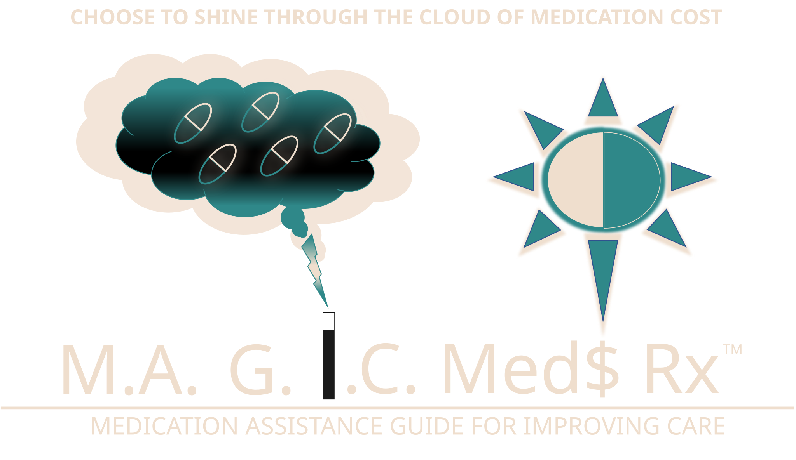

Medication Assistance Guide for Improving Care — helping patients access life-saving brand medications through manufacturer programs, coverage tools, and personalized guidance.
Over the years medications have become more advanced, BUT so have prices. Brand name medications are among the top reasons for non-adherence, financial burden, and health inequity. Many seem available only to those who can afford them — leaving uninsured and Medicare patients struggling to access vital treatments.
1. Request a demo by emailing magicmedsrx@gmail.com
2. Decide on number of users and make a donation to obtain an institutional login
I am a practicing clinical pharmacist passionate about helping patients access the best
therapies to improve their quality of life and reduce mortality. My family is similar to
many other across the United States — my parents are now Medicare-age and face rising
prescription costs despite decades of hard work. Seeing this firsthand inspired me to
create M.A.G.I.C. — the Medication Assistance Guide for Improving Care — to ensure
everyone can access affordable, life-saving medications.
- Kyle Ames, PharmD, BCPS
Clinical Pharmacist
Creator of M.A.G.I.C. Meds Rx
A Patient Assistance Program (PAP) is a drug manufacturer’s initiative that provides eligible patients with brand-name medications completely free of charge — often for up to one year at a time. These programs deliver medications directly to patients’ homes and are available to both uninsured and Medicare patients with limited income.
PAP programs are vastly underutilized because they’re difficult to find — often hidden deep within manufacturer websites or mentioned vaguely in advertisements. Even many healthcare professionals are unaware of the full scope of available programs. M.A.G.I.C. Meds Rx makes these programs clear, accessible, and easy to apply for.
M.A.G.I.C. is a comprehensive, interactive resource that connects patients to manufacturer patient assistance programs for brand-name medications in the United States. Our mission is to save patients money, improve adherence, and eliminate inequity caused by high prescription costs — empowering everyone to access the medications they need to live healthier, longer lives.